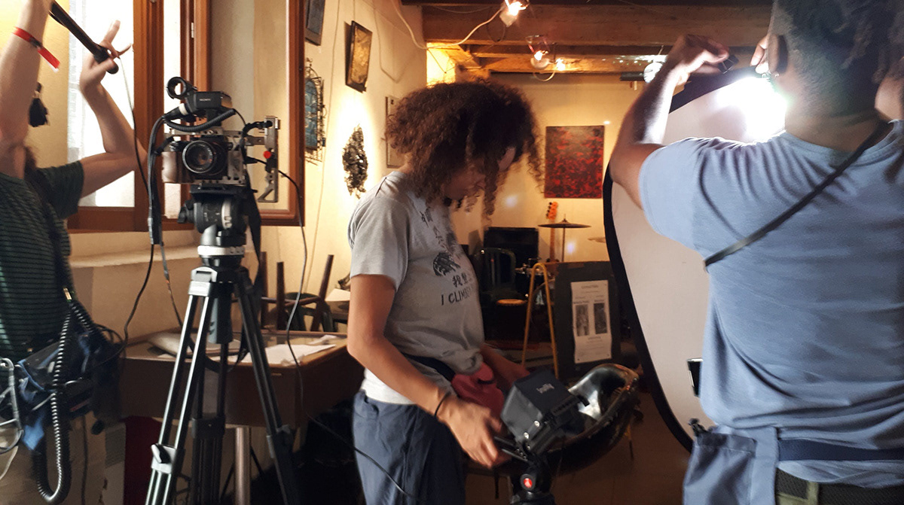
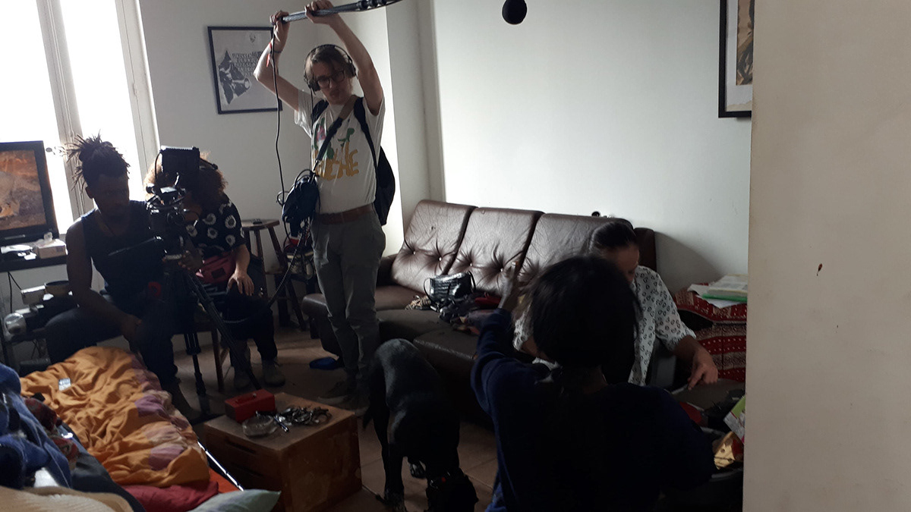
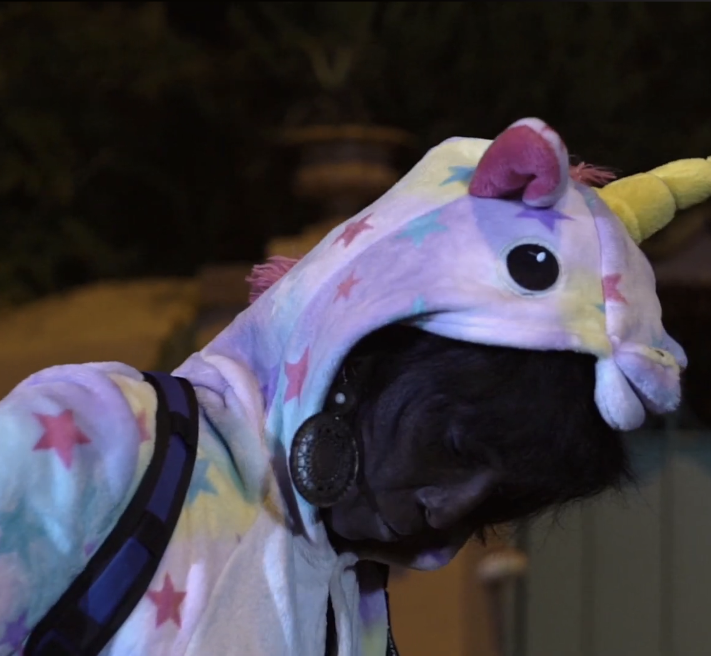

Short documentary / France
Les Voix du dedans
Um retrato íntimo de Marianne, uma mulher que convive com vozes e constrói, através delas, uma relação singular com sua própria existência.
Synopsis
Marianne parece carregar várias vidas em seu rosto. A partir de fragmentos do cotidiano, o filme revela sua relação íntima com as vozes que escuta. Entre reinvenção, performance e fragilidade, emerge o retrato de uma mulher que luta para existir na complexidade de sua singularidade.
Approach
O filme se constrói a partir da proximidade com o rosto e o corpo da protagonista, evitando representações espetaculares das vozes internas e privilegiando uma escuta sensível e exteriorizada da experiência vivida.
Project trajectory
- Festival International Jean Rouch – seleção
- Festival International de Films de Femmes – seleção
- Exibido em contextos acadêmicos e festivais documentais
- Produzido no Master Écritures Documentaires – Aix-Marseille
Role
Direção de fotografia compartilhada, construindo uma abordagem visual baseada na proximidade com a personagem, no tempo real e na presença do corpo como eixo central da narrativa.


